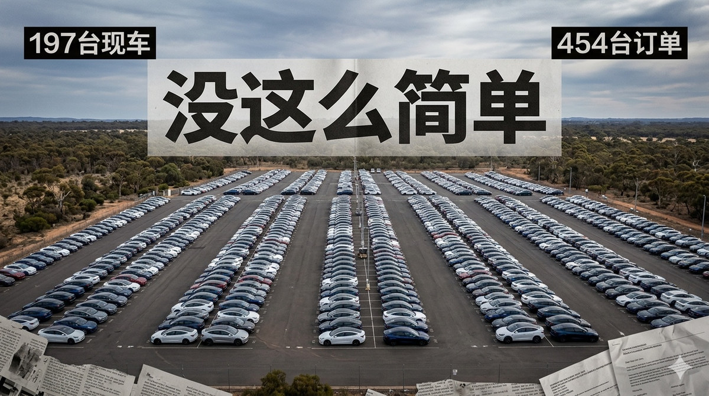

P3.0_B3_纪实编辑_图1_事件海报感_BDD42F58.jpeg

Review metadata
| Conversation | 005-视频制作流程建议 |
|---|---|
| Group | B3 · Prompt 3.0：Editorial Documentary |
| Test purpose | 测试 Editorial Documentary 是否能形成更平衡的事实链与调查资料表达。 |
| Current filename | P3.0_B3_纪实编辑_图1_事件海报感_BDD42F58.jpeg |
| Original filename | BDD42F58-F47D-4E20-B5FC-55508A859635.jpeg |
| Canonical path | references/text2pic/conversations/005-视频制作流程建议/originals/images/user-tests/P3.0_B3_纪实编辑_图1_事件海报感_BDD42F58.jpeg |
| Canonical SHA-256 | f845e998b9a7f536144d678c0f273c63a1593570546ccec2bb9f2960269b25ad |
| User feedback evidence | references/text2pic/conversations/005-视频制作流程建议/IMAGE_MANIFEST.md § B3｜Prompt 3.0：Editorial Documentary |
| Rule-impact evidence | references/text2pic/conversations/005-视频制作流程建议/IMAGE_MANIFEST.md § B3｜Prompt 3.0：Editorial Documentary |
| Duplicate bytes elsewhere in corpus | — |
Preview/thumbnail are derived review assets. The canonical path remains the authority. GitHub may show an LFS pointer at that path unless the client resolves LFS.
Single-image metadata JSON · Canonical repository path · Exploration evidence document
{kind=link}